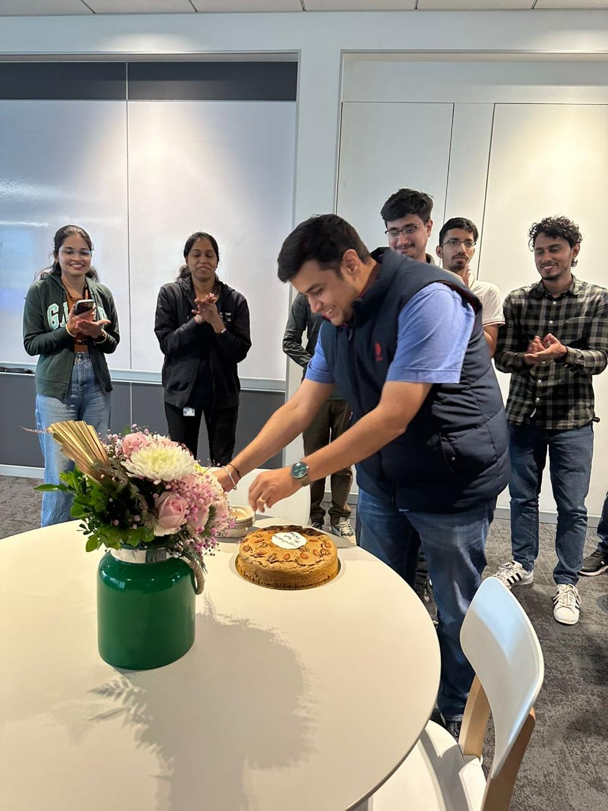
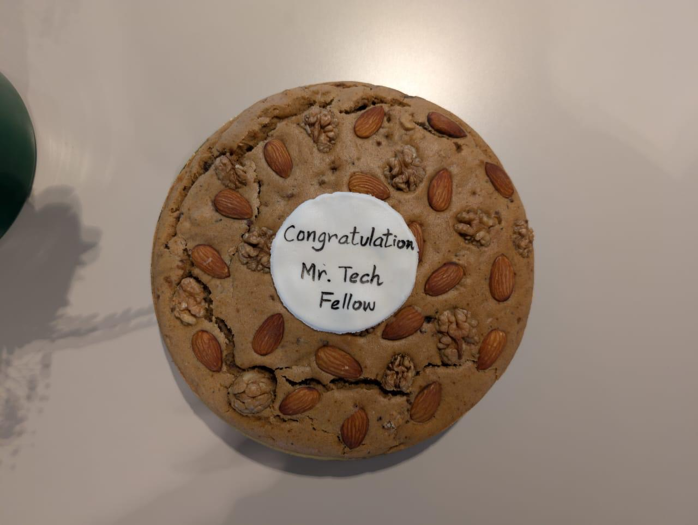
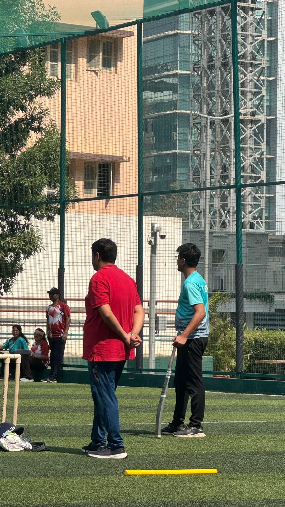
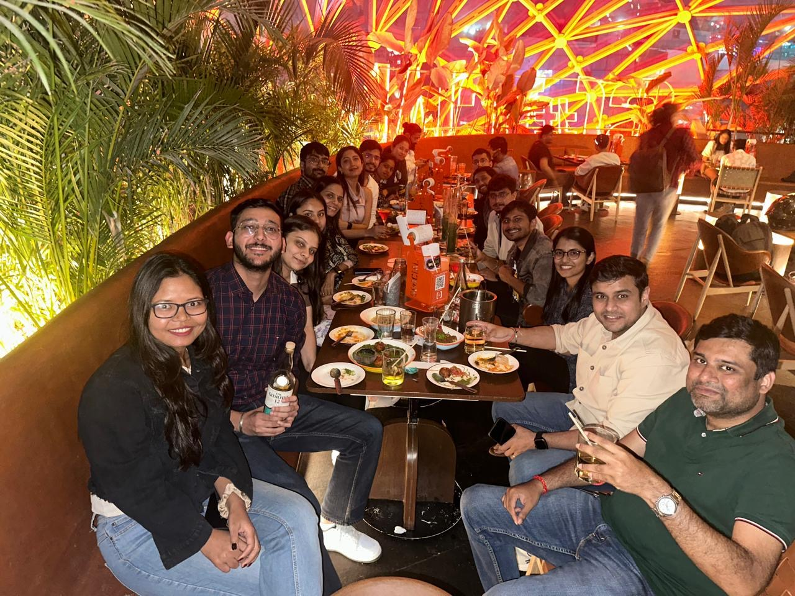
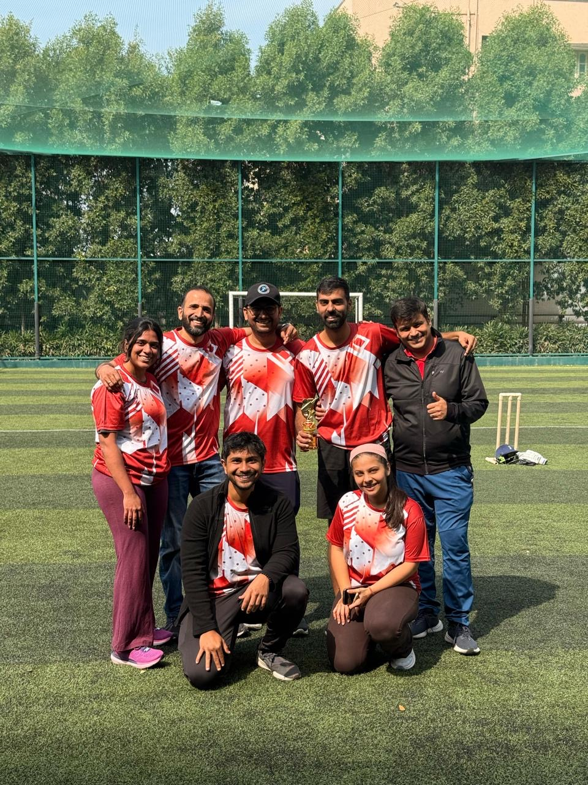
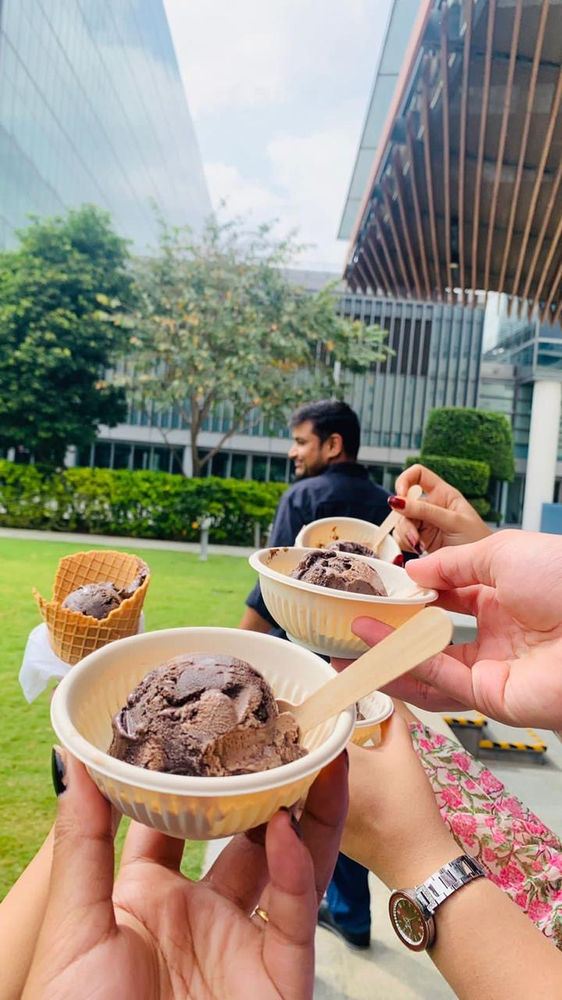
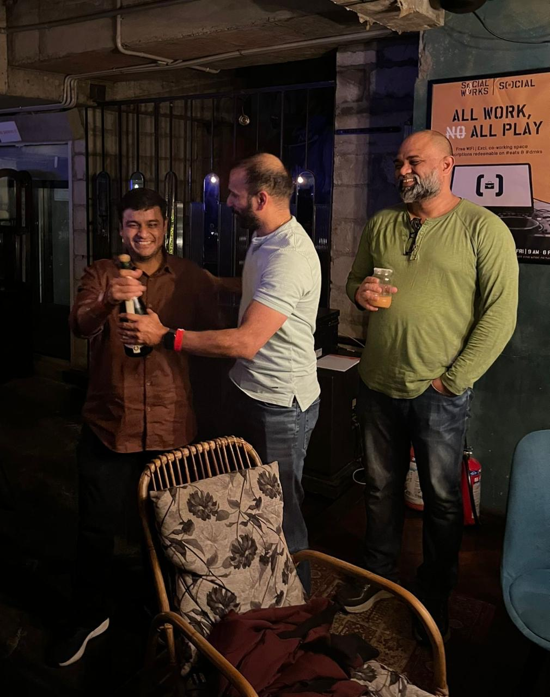
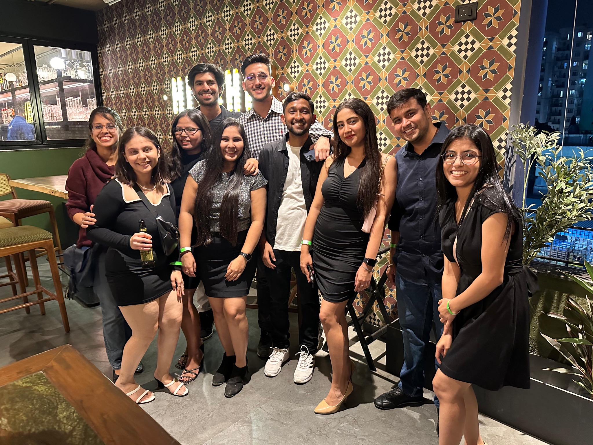
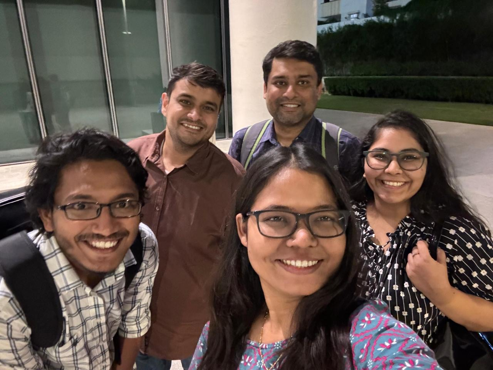
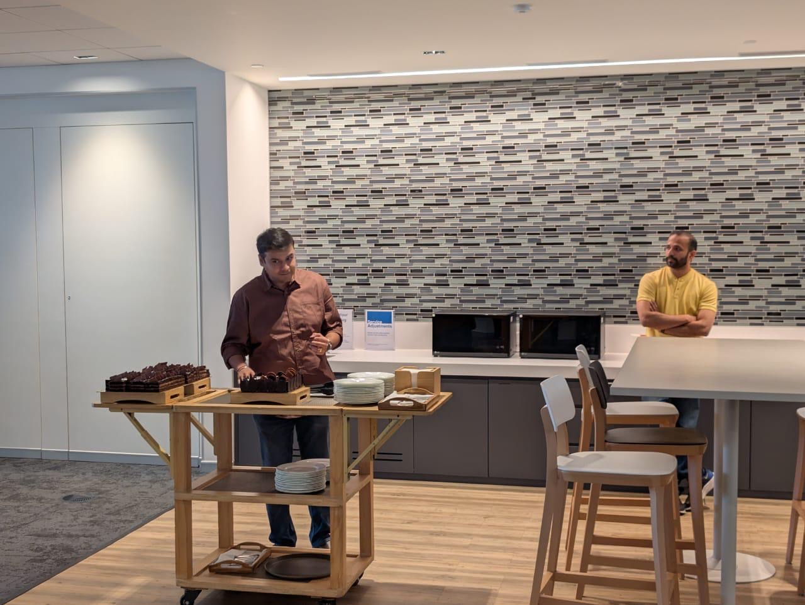

Tech Fellow
Deep technical instincts. Suspiciously fast answers.
EXPERT MODEREPORTING: GS16 JULY 2026
One manager. Countless battles. Infinite sarcasm.

PERSONNEL FILE / 01
Smart enough to solve it. Sassy enough to make sure you remember it.
Deep technical instincts. Suspiciously fast answers.
EXPERT MODETook the difficult rooms, arguments and battles so the team could focus.
LEGENDARYDelivered truth, context and comedy in a single sentence.
999+ XPProduction on fire? Somehow, still the calmest person in the room.
P0 READYLIVE ANALYTICS
CACHE / 02
Birthday patches, cricket deployments, team dinners and absolutely essential ice-cream breaks.









COMMIT HISTORY / 03
Added Karan to GSSystem stability increased immediately.
+ leadershipProtected team during difficult battlesEscalations handled. Team focus preserved.
+ shield_modeTech Fellow unlockedEven the cake confirmed it.
+ expertiseKaran migration initiatedWarning: system stability may be reduced.
- karan.exePOST-MIGRATION STATUS / 04
14:02:11 Searching for someone to fight the next battle… NOT FOUND
14:02:14 Searching for perfectly timed sarcasm… NOT FOUND
14:02:18 Searching for calm during a P0… NOT FOUND
14:02:23 Checking team emotional stability… DEGRADED
14:02:31 Attempting replacement search… NO MATCHES
INCIDENT GS-0716
karan.exeExpected behaviour: manager joins, solves problem, protects team, says something sarcastic.
VIDEO VAULT / 05
COMMAND LINE / 06
Commands: help, karan, stay, goodbye, thankyou, sarcasm.
Welcome to Karan OS. Type help to continue.
FINAL DEPLOYMENT / 07
Thank you for every battle you fought, every impossible conversation you took on, every lesson, every laugh and every time you had our backs.